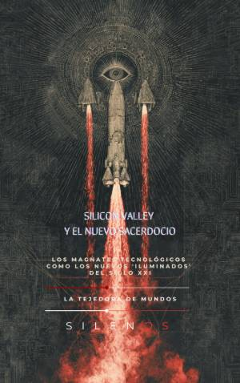

Illuminati
SILICON VALLEY Y EL NUEVO SACERDOCIO : Los Magnates Tecnológicos como los Nuevos 'Iluminados' del Siglo XXI
Sinopsis
¿Es la tecnología la nueva religión de nuestra era? En Silicon Valley y el Nuevo Sacerdocio, se explora la fascinante y oscura intersección entre la mística, la contracultura y el poder desmedido de las élites tecnológicas. Este libro desentraña cómo los ingenieros y magnates de California han pasado de ser visionarios de garaje a convertirse en los "sumos sacerdotes" de una liturgia global basada en algoritmos, capital y una fe ciega en el progreso técnico. Un viaje desde el ocultismo hasta la inteligencia artificial La narrativa comienza en los orígenes más insospechados: los rituales de Jack Parsons y la Logia Ágape, donde la cohetería moderna se mezcló con el esoterismo. Desde esos cimientos de audacia y rito, el autor traza una línea directa que atraviesa la contracultura de los años 60, el espíritu libertario del Whole Earth Catalog y la explosión de las comunidades virtuales, hasta llegar a la era actual de la vigilancia, el bitcóin y la búsqueda de la inmortalidad. ¿Qué descubrirás en este libro? Las raíces ocultas: Cómo la intersección entre mística y ciencia en los inicios del Laboratorio de Propulsión a Chorro (JPL) moldeó el arquetipo del ingeniero moderno. La Ideología Californiana: El análisis de cómo el espíritu hippie se fusionó con el libertarismo para crear la cultura de Silicon Valley. El Sacerdocio del Capital: Una mirada crítica a las rondas de inversión como rituales de fe y a los "Demo Days" como los nuevos púlpitos mesiánicos. Desafíos Actuales: Desde la automatización y el fin de la burocracia hasta la obsesión por el rejuvenecimiento y el coste social de las infraestructuras digitales. Soberanía e Individuo: La huida del Estado y la creación de "naciones de afinidad" lideradas por una élite técnica. Sobre la obra A través de cuatro partes detalladas —El Fuego y el Rito, La Contracultura y la Máquina, El Sacerdocio del Capital, y Eficacia y Algoritmo—, esta obra invita a una reflexión urgente sobre la delegación de nuestra soberanía técnica. Es una lectura esencial para quienes buscan entender no solo cómo funciona el mundo digital, sino quiénes son los arquitectos que lo moldean y bajo qué sistema de creencias operan. Atrévete a cuestionar el dogma tecnológico y descubre los mitos fundacionales que sostienen el imperio de Silicon Valley.